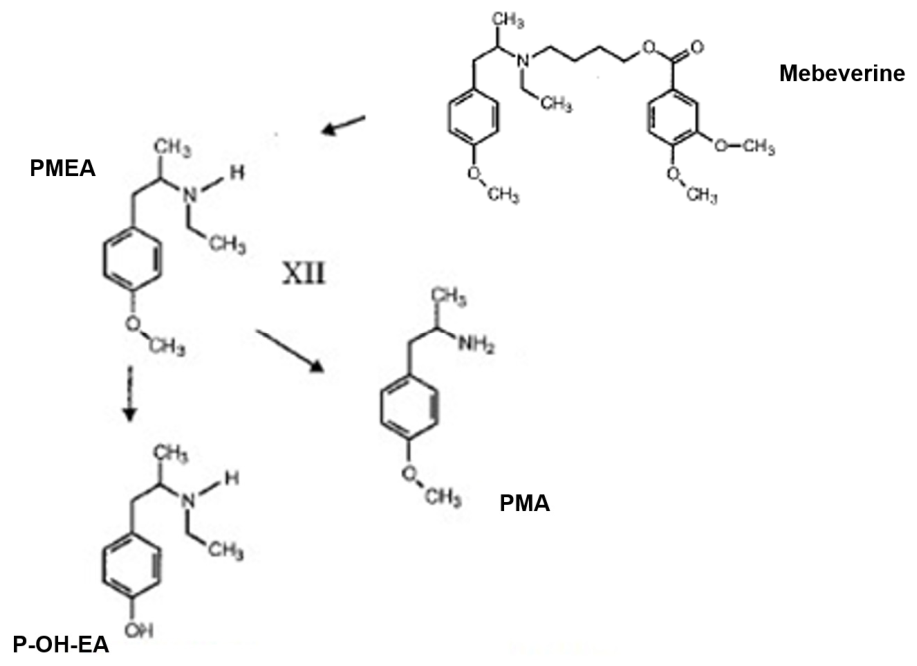

Technical Letters · TL02
Edition v2.0, 2012 (version 2.0) · effective 8 June 2012 · superseded
Retrieved on 25 November 2026 from https://www.wada-ama.org/sites/default/files/resources/files/tl02_mebeverine_metabolism.pdf
Editions: v3.0, 2021 (current) · v2.0, 2012
p. 1
MEBEVERINE METABOLISM
*The approval by the WADA Executive Committee is applicable only to Technical Letters issued after November 2019.
The World Anti-Doping Agency wishes to draw the attention of the Laboratories to the following remarks and instructions on the analysis and reporting of p-hydroxy-amphetamine (p-OH-A).
At its meeting held on March 5-6, 2012, the WADA Laboratory Expert Group (LabEG) evaluated information on the metabolism of mebeverine, a non-prohibited, antispasmodic substance used for the treatment of irritable bowel disease (IBD). The literature available on the metabolism of this substance indicates that it can metabolize into p-OH-A, which also constitutes a Metabolite of the Prohibited Substances amphetamine, selegiline and famprofazone.
In order to avoid the incorrect reporting of an Adverse Analytical Finding on a Sample containing mebeverine-derived p-OH-A, WADA recommends that when p-OH-A is detected in a Sample, the Laboratory looks for the detection of additional mebeverine-specific Metabolites (the parent drug is not detected in urine).
In addition to p-OH-A, it has been shown that mebeverine can also metabolize into i) p-methoxyethylamphetamine (PMEA), ii) p-OH-ethylamphetamine (p-OH-EA) and iii) p-methoxy-amphetamine (PMA) [Kraemer et al, Drug Metab Dispos (2000) 28: 339; Zaitsu et al, Forensic Sci Int (2008) 177: 77].

Should you have any further questions, please do not hesitate to contact the WADA Science Department.
Retrieved on 25 November 2026 from https://www.wada-ama.org/sites/default/files/resources/files/tl02_mebeverine_metabolism.pdf